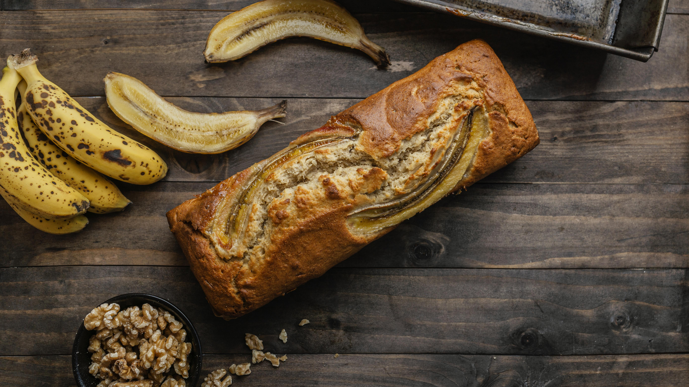

Este site é dedicado as receitas da vovó (em memória Ermelinda) que cozinhava coisas maravilhosas com muito amor 💗
São João do Ivaí - PR
Fiquem de olho 👀 nas delicias que iremos postar
BOLO FOFINHO DE BANANA
3 ovos
3 bananas grandes amassadas (banana nanica)
1/2 de xicara de oleo
2 xicaras de trigo
1 1/2 xicara de açucar
1 colher canela em pó
1 colher fermento em pó
